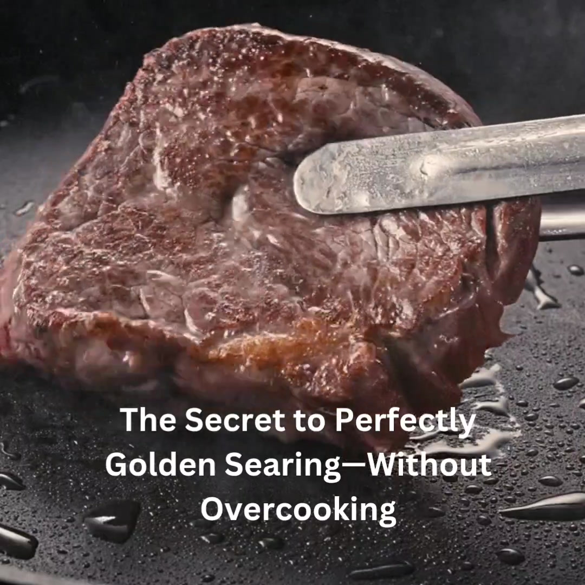
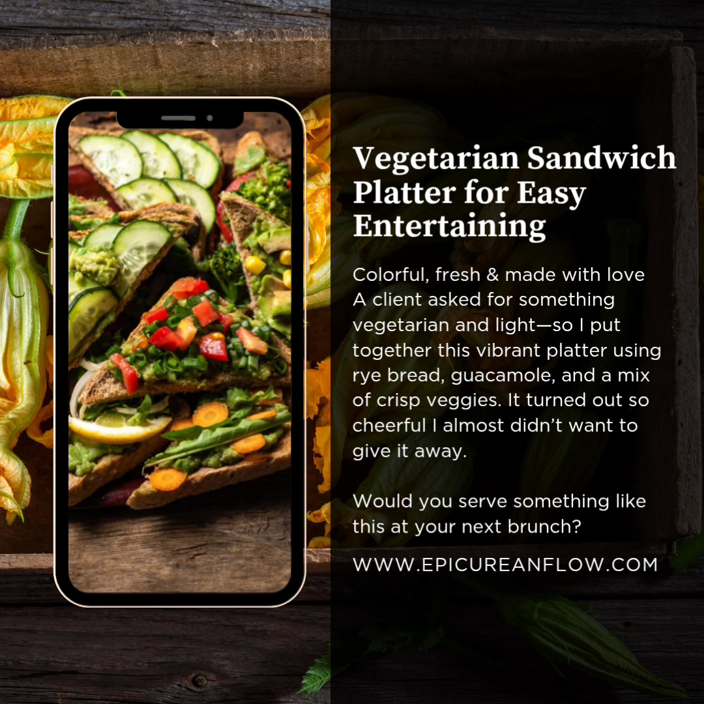
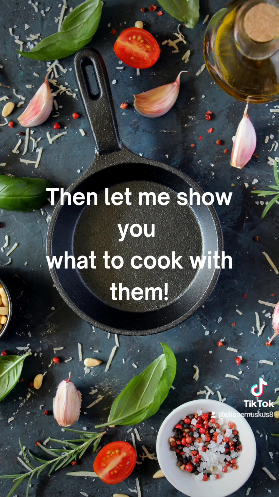
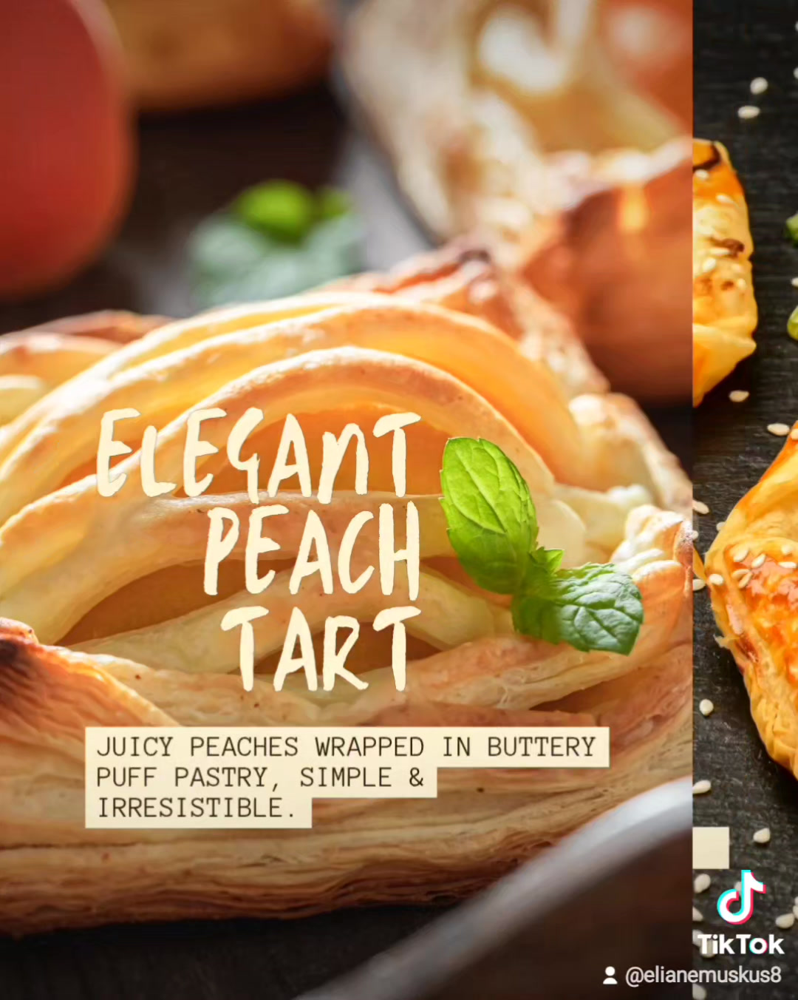
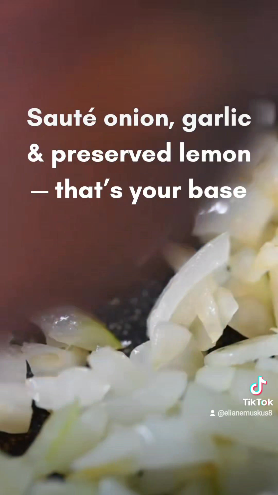
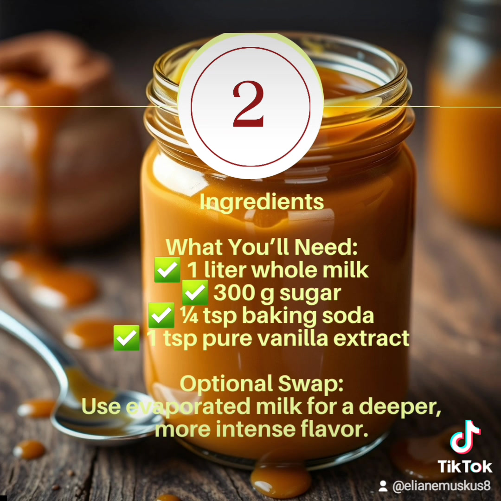
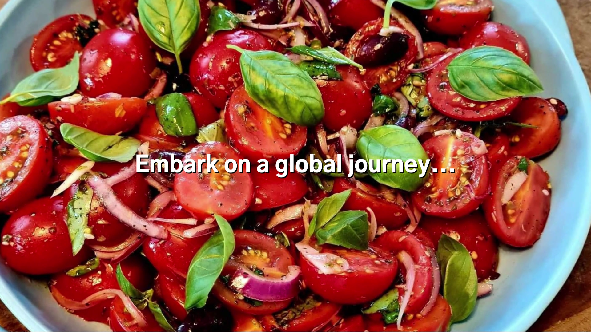
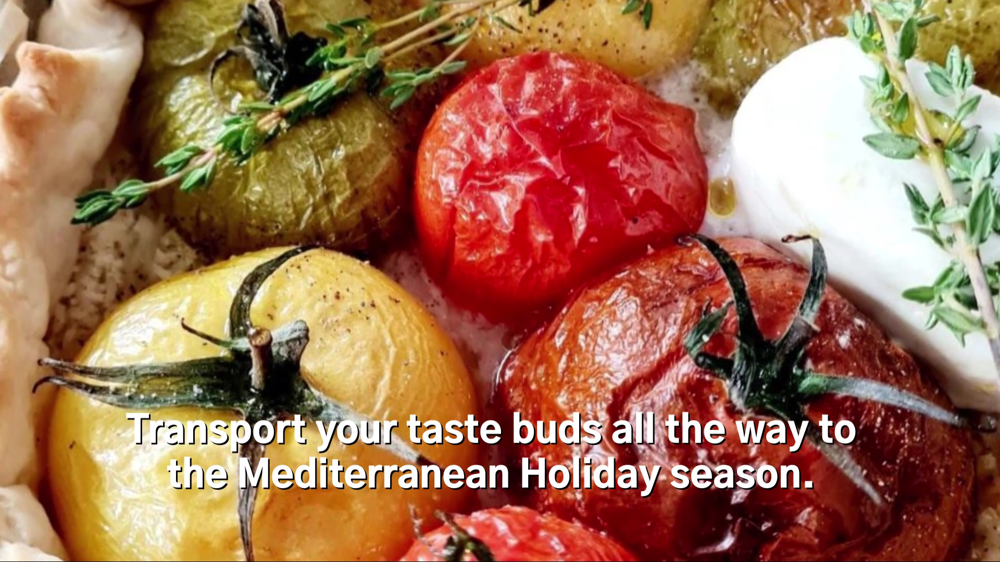
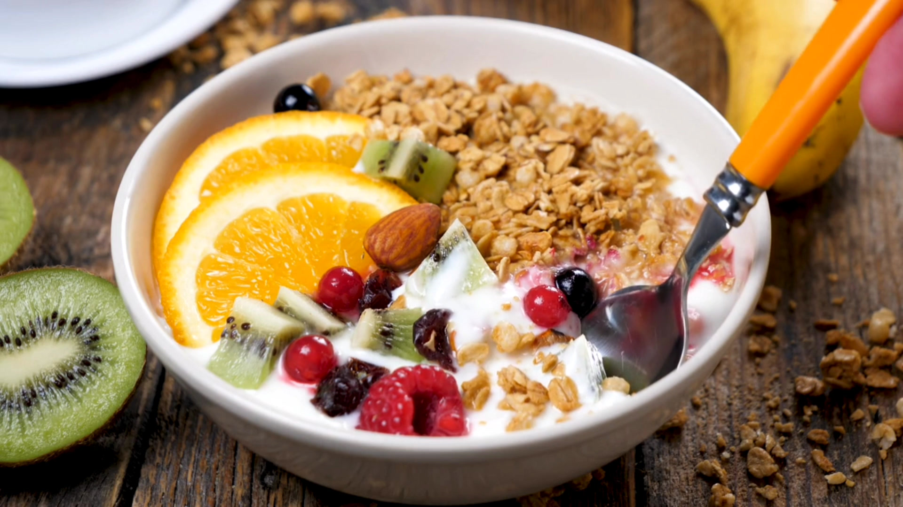

0:20Searing the Perfect Steak
Master the art of searing the perfect steak with these professional chef tips. Learn the best steak cooking techniques for a juicy, flavorful result every time.

0:20Master the art of searing the perfect steak with these professional chef tips. Learn the best steak cooking techniques for a juicy, flavorful result every time.
Learn how to create delicious, healthy meals with fresh, whole ingredients. These chef-approved tips make healthy cooking easy, flavorful, and perfect for everyday eating.

0:05Impress guests with fresh, healthy bruschetta ideas that are quick to prepare and full of Mediterranean flavor. Perfect for parties, light appetizers, or easy gourmet starters.
A must-watch for passionate food lovers! Explore Mediterranean recipes, chef cooking tips, and gourmet ideas that will inspire your next meal. Perfect for anyone who loves bold flavors and fresh ingredients.

0:20Join our Mediterranean cooking courses and save 10%! Learn chef techniques, healthy recipes, and gourmet skills that will transform your cooking. Perfect for home cooks of all levels.

0:19Discover how to create golden, flaky puff pastry every time with these easy chef tips. Perfect for sweet or savory pastry recipes, these techniques guarantee light, airy layers and professional results at home.

0:34Learn how to make authentic Moroccan chicken tagine with tender meat, warm spices, and Mediterranean flair. A flavorful, diabetes-friendly dish perfect for any occasion.
Learn how to make silky, crackly-topped Crème Brûlée at home with this easy, foolproof recipe. Whether you’re new to French desserts or looking to perfect your technique, this step-by-step tutorial will show you how to master this elegant classic. With just a few ingredients, you’ll create a creamy custard base topped with a perfectly torched caramelized sugar crust—restaurant quality, made in your own kitchen. Perfect for special occasions, date nights, or when you simply want to impress.fre ch desserts
Discover how to make elegant and refreshing marinated cucumber rolls filled with whipped feta, the perfect appetizer or party bite. This light Mediterranean-inspired recipe is not only easy to prepare but also visually stunning—ideal for summer gatherings, mezze platters, or healthy entertaining. In this video, Chef Eliane walks you through the process of marinating cucumber ribbons and filling them with a creamy whipped feta and herb mixture. These rolls are a showstopper for brunch, cocktail parties, or holiday spreads, and they’re naturally low-carb and gluten-free.

0:28Learn how to make rich, creamy homemade dulce de leche using a simple method that delivers authentic flavor every time. This slow-cooked caramel sauce is perfect for drizzling over desserts, spreading on toast, or adding to your favorite baked goods. Whether you're a fan of Latin American desserts or just love a good sweet treat, this easy dulce de leche recipe is a must-try. In this video, Chef Eliane shows you step-by-step how to make dulce de leche from scratch using pantry staples—no special equipment needed.caramelsauce Latinamerican
Discover our comprehensive culinary services, private chef bookings, and bespoke kitchen consulting by Chef Eliane.

0:58Explore the Let's Eat Cookbook by Chef Eliane Muskus, packed with wholesome Mediterranean recipes, tips, and kitchen inspiration.
Master essential culinary techniques, knife skills, pan control, and classic methods to elevate your home cooking.

0:42Fresh, vibrant seasonal recipes crafted for spring with bright Mediterranean herbs, crisp greens, and market vegetables.
Hosting a party and not sure what to cook? Chef Eliane helps you design the perfect menu, organize your kitchen, and prepare everything in advance — so you can enjoy the event stress-free.

0:17Start your morning right with nutritious, energizing breakfast ideas and chef-crafted morning recipes.
Subscriber Privilege
Explore our practical courses today and apply promo code FLOWS10 at checkout to enjoy your 10% discount on foundational, intermediate, and advanced culinary courses.
Browse All Courses Now